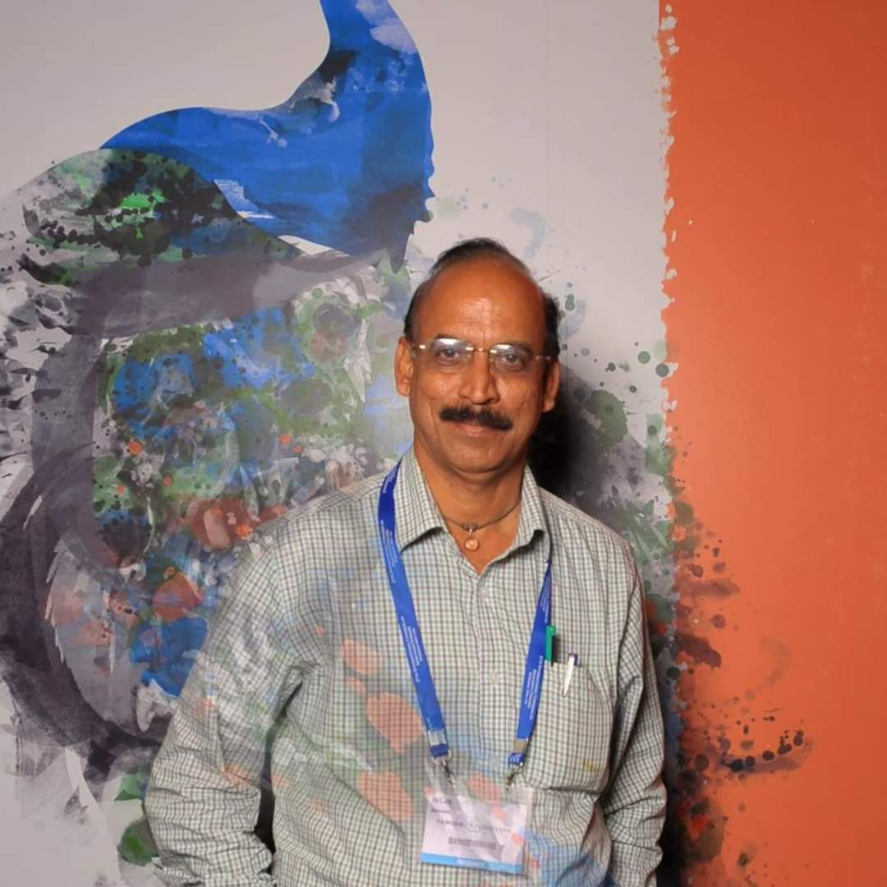

DR. RAMBABU AYYADEVARA
Chief Entomologist,Deputy Director, CML, GHMC,
Directorate of Public Health and Family Welfare,
Hyderabad, Telangana State.
DR. Rambabu Ayyadevara Working as a "Chief Entomologist, GHMC, Hyderabad, Telangana State" Past 33 Years,
he is involved in more than 10 Thousands Eye Catract Surgeries, 6 Thousands free Spectacles
distribution to School Children and Old Age People and Social Awareness Campaigns on
Ophthalmology, HIV/AIDS, Nutrition, Diabetic, Malaria, Dengue, Chikungunya, Flariasis.
His Honest Dedicating Service has been placed in Telugu Book of Records. he collected
362 pairs of Eye Balls in Eye Donation Programme in 2002 with the help of Police Eve Bank.
It is a National Record, Conducted Innovation Medical Camp and other Innovation Methods to
Control the Malaria and Dengue in Agency area of Bhadrachalam tribal area and he got Doctorate
in Malaria＆Dengue.
He did his research in HIV, AIDS and Nutrition India Public Health Life Member,
Life Member of Indian Nutrition Assocation, Indian Dietetic Association Life
Member and
Life Member for Community Ophthalmology Alumni group London.
He Published more than 7 papers
on vector borne diseases. Participated in national and international conference.
He has Taken award from president Neelam Sanjava Reddy, Award from Governer Sheli Kumar Shindey and
20 times awards from various District Collectors and Po's on the occasion on Independence and
Republic day.
